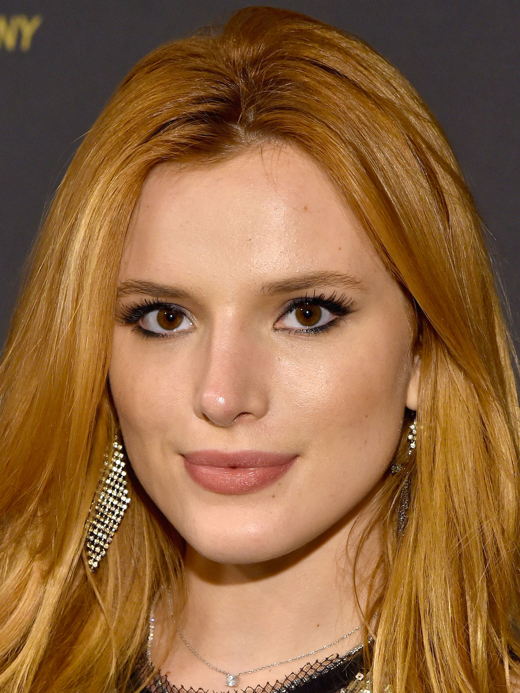
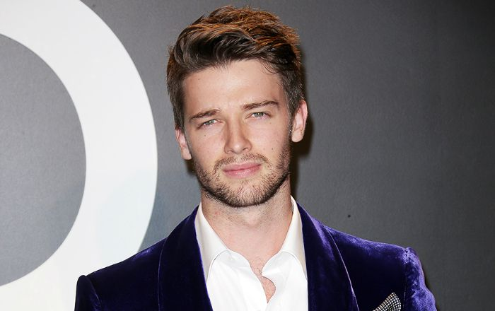
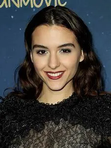
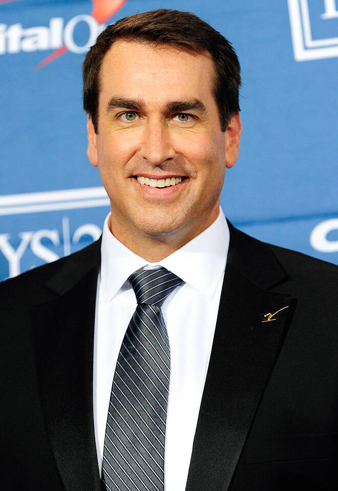
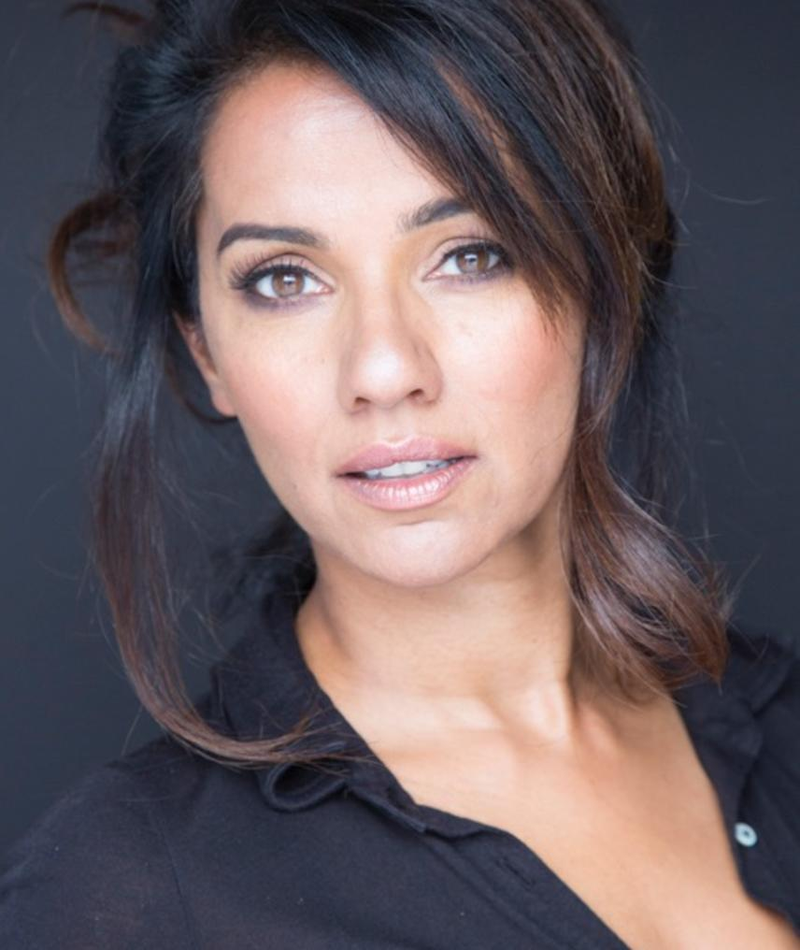

Annabella Avery Thorne é uma atriz, cantora, modelo, diretora, produtora executiva, empresaria e autora norte-americana, conhecida mundialmente por interpretar Cece Jones na série de televisão Shake It Up do Disney Channel.

Patrick Arnold Schwarzenegger Shriver é um modelo e ator americano, filho de Arnold Schwarzenegger e Maria Shriver. Através da família de sua mãe, ele é sobrinho-neto do presidente John F. Kennedy.

Quinn Shephard. É uma atriz norte americana. Conhecida pelo seu papel de Donna Malone em Unaccompanied Minors

Robert Allen "Rob" Riggle, Jr. é um ator, comediante e ex-oficial do Corpo de Fuzileiros Navais dos Estados Unidos.


Suleka Mathew é uma atriz canadense, mais conhecida por seus papéis principais nas séries de televisão Claws como Arlene Branch, Red Widow como Dina Tomson, Men in Trees como Sara Jackson e Da Vinci's Inquest como Dra. de melhor atriz no Leo Awards.